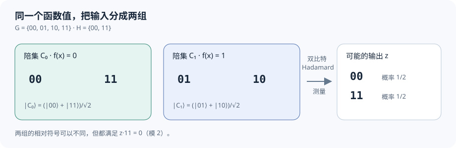

16｜高级算法与验证：从下界证明到可信输出
前面的章节回答“量子线路怎样工作”和“代表算法怎样运行”。本章进一步回答五个研究生阶段会反复遇到的问题：
怎样证明某种查询加速已经最优？
Simon、Shor 与更一般的隐藏结构有什么共同骨架？
量子行走何时比朴素 Grover 更能利用结构？
LCU、block encoding、qubitization、QSP 与 QSVT 到底是什么关系？
算法给出一个量子态或采样分布后，怎样以可承受成本验证它？
阅读每种方法时，先确认输入模型，再看关键推导、可手算的例子和适用边界。
如果第一次接触本章，不必一口气记住所有名称。先读第 1 节，再沿着第 3 节的四元素例、第 4 节的四环行走、第 5 节的单量子比特矩阵、第 7 节的有限测量例走一遍；这些地方只用到前面章节的叠加、测量和矩阵乘法。第 2 节的查询下界证明框架、第 5 节的相位序列合成和第 6 节的容错资源估计可在入门研究时回看。本章展示的是几种方法的接口与边界，并不要求初学者能独立复现每篇原始论文。
1. 读算法论文前先填六个空
任何“量子加速”都应先写成
( 输入 , 访问 , 输出 , 误差与成功率 , 量子资源 , 经典基线 ) .
(\text{输入},\text{访问},\text{输出},
\text{误差与成功率},\text{量子资源},\text{经典基线}).
( 输入 , 访问 , 输出 , 误差与成功率 , 量子资源 , 经典基线 ) . 对应六个问题：
查询、门、样本、通信、空间和墙钟时间是不同复杂度。后文出现的每个优势，都只在所声明的资源模型中成立。
2. 查询下界：证明“任何算法都不能更少查询”
2.1 oracle 先固定
对布尔函数，标准 bit oracle 是
O f ∣ x , y ⟩ = ∣ x , y ⊕ f ( x ) ⟩ .
O_f|x,y\rangle=|x,y\oplus f(x)\rangle.
O f ∣ x , y ⟩ = ∣ x , y ⊕ f ( x )⟩ . 把第二寄存器设为 ∣ − ⟩ |-\rangle ∣ − ⟩
S f ∣ x ⟩ = ( − 1 ) f ( x ) ∣ x ⟩ .
S_f|x\rangle=(-1)^{f(x)}|x\rangle.
S f ∣ x ⟩ = ( − 1 ) f ( x ) ∣ x ⟩ . 在查询复杂度中，一次 O f O_f O f S f S_f S f f f f
2.2 多项式方法的核心归纳
把 oracle 数据写为 z = ( z 1 , … , z N ) ∈ { 0 , 1 } N z=(z_1,\ldots,z_N)\in\{0,1\}^N z = ( z 1 , … , z N ) ∈ { 0 , 1 } N
查询前，振幅与 z z z
每次 oracle 查询至多让振幅多乘一个输入变量或其线性函数，因此次数最多增加 1；
与输入无关的酉门只对振幅做线性组合，不增加最高次数。
这里“增加 1”不是一个神秘的计数规则。对相位查询，若所查的是第 j j j z j z_j z j
( − 1 ) z j = 1 − 2 z j .
(-1)^{z_j}=1-2z_j.
( − 1 ) z j = 1 − 2 z j . 原来与输入无关的振幅乘上这个因子后，是 z j z_j z j z j z_j z j z j z_j z j 1 − z j 1-z_j 1 − z j z j 2 = z j z_j^2=z_j z j 2 = z j
所以 T T T T T T 2 T 2T 2 T d d d
T ≥ d 2 .
T\ge\frac d2.
T ≥ 2 d . 手算：一次 Deutsch 查询对应二次概率
令 z 0 = f ( 0 ) , z 1 = f ( 1 ) z_0=f(0),z_1=f(1) z 0 = f ( 0 ) , z 1 = f ( 1 )
z 0 ⊕ z 1 = z 0 + z 1 − 2 z 0 z 1 .
z_0\oplus z_1=z_0+z_1-2z_0z_1.
z 0 ⊕ z 1 = z 0 + z 1 − 2 z 0 z 1 . 代入四组输入可逐项检查：00、11 给 0，01、10 给 1。它是二次多项式，因此一次查询的 2 T = 2 2T=2 2 T = 2
对 OR，近似多项式次数为 Θ ( N ) \Theta(\sqrt N) Θ ( N ) Ω ( N ) \Omega(\sqrt N) Ω ( N ) Θ ( N ) \Theta(\sqrt N) Θ ( N )
2.3 hybrid / adversary 的几何直觉
设 O 0 O_0 O 0 O j O_j O j j j j
∑ x = 1 N α x ∣ x ⟩ , ∑ x ∣ α x ∣ 2 = 1.
\sum_{x=1}^N\alpha_x|x\rangle,
\qquad
\sum_x|\alpha_x|^2=1.
x = 1 ∑ N α x ∣ x ⟩ , x ∑ ∣ α x ∣ 2 = 1. O j O_j O j O 0 O_0 O 0 ∣ j ⟩ |j\rangle ∣ j ⟩ j j j ∣ α j ∣ |\alpha_j| ∣ α j ∣ 1 / N 1/\sqrt N 1/ N T T T O ( T / N ) O(T/\sqrt N) O ( T / N )
1 N ∑ j = 1 N ∣ α j ∣ ≤ 1 N ∑ j = 1 N ∣ α j ∣ 2 = 1 N .
\frac1N\sum_{j=1}^{N}|\alpha_j|
\le\sqrt{\frac1N\sum_{j=1}^{N}|\alpha_j|^2}
=\frac1{\sqrt N}.
N 1 j = 1 ∑ N ∣ α j ∣ ≤ N 1 j = 1 ∑ N ∣ α j ∣ 2 = N 1 . 这一步只是柯西—施瓦茨不等式：一个归一化态不可能对每个 未知标记位置都放很大的振幅。严格的多轮下界还需逐轮比较使用不同 oracle 时的状态，并控制这些差距如何累计；上面的单轮计算只是其中最直观的一步。
要让输出分布相差常数量级，多轮 hybrid 论证最终要求
T = Ω ( N ) .
T=\Omega(\sqrt N).
T = Ω ( N ) . 一般 adversary method 会给不同输入对赋权，用一个矩阵范数刻画“尚未被区分的总量”，再证明一次查询最多减少多少。它能处理许多多项式方法不方便的组合问题，并在常数因子意义下刻画有界错误量子查询复杂度。
2.4 promise 与 total function
total function ：每个 N N N partial function / promise problem ：算法只需在满足承诺的输入上正确。
Deutsch–Jozsa 与 Simon 的指数查询分离依赖 promise。对 total Boolean function，确定性经典查询复杂度与有界错误量子查询复杂度之间至多相差多项式。这个结论只针对相应查询模型；它不否定 Shor 这类利用代数结构、按门复杂度分析的时间算法。
3. 隐藏子群：Simon 与 Shor 的共同语言
3.1 一般定义
先把符号落到熟悉的对象上。一个“群”是一组标签和一种运算：运算有结合律，有一个“不改变别人”的单位元，每个元素也有逆元。例如两位串 00 , 01 , 10 , 11 00,01,10,11 00 , 01 , 10 , 11 ⊕ \oplus ⊕ 00 00 00 00 00 00 g H = { g h : h ∈ H } gH=\{gh:h\in H\} g H = { g h : h ∈ H } g g g g ⊕ H g\oplus H g ⊕ H
给定有限群 G G G f : G → S f:G\to S f : G → S H ≤ G H\le G H ≤ G
f ( g 1 ) = f ( g 2 ) ⟺ g 1 H = g 2 H .
f(g_1)=f(g_2)
\quad\Longleftrightarrow\quad
g_1H=g_2H.
f ( g 1 ) = f ( g 2 ) ⟺ g 1 H = g 2 H . 也就是说，f f f H H H
从均匀叠加查询 f f f
∣ g H ⟩ = 1 ∣ H ∣ ∑ h ∈ H ∣ g h ⟩ .
|gH\rangle=\frac{1}{\sqrt{|H|}}
\sum_{h\in H}|gh\rangle.
∣ g H ⟩ = ∣ H ∣ 1 h ∈ H ∑ ∣ g h ⟩ . 若不读取而直接丢弃输出寄存器，输入寄存器则不是某个未知的纯态，而是对所有不同左陪集的均匀混态
ρ H = 1 ∣ G / H ∣ ∑ g H ∈ G / H ∣ g H ⟩ ⟨ g H ∣ .
\rho_H=\frac1{|G/H|}\sum_{gH\in G/H}|gH\rangle\langle gH|.
ρ H = ∣ G / H ∣ 1 g H ∈ G / H ∑ ∣ g H ⟩ ⟨ g H ∣. 这两种操作的状态描述不同；但随后只测输入寄存器时，混态给出的 Fourier 采样分布，正是对各个条件纯态分布取平均。因此在只关心该分布的算法分析中，可以省略显式测量，却不能把偏迹后的状态仍写成随机纯态。
先解释“角色”：它不是人物，而是一个把群运算变成复数乘法的函数 χ \chi χ ∣ χ ( g ) ∣ = 1 |\chi(g)|=1 ∣ χ ( g ) ∣ = 1 χ ( g 1 g 2 ) = χ ( g 1 ) χ ( g 2 ) \chi(g_1g_2)=\chi(g_1)\chi(g_2) χ ( g 1 g 2 ) = χ ( g 1 ) χ ( g 2 ) χ z ( x ) = ( − 1 ) z ⋅ x \chi_z(x)=(-1)^{z\cdot x} χ z ( x ) = ( − 1 ) z ⋅ x z ⋅ x z\cdot x z ⋅ x
当 G G G H H H
H ⊥ = { χ : χ ( h ) = 1 for all h ∈ H } .
H^\perp=\{\chi:\chi(h)=1\text{ for all }h\in H\}.
H ⊥ = { χ : χ ( h ) = 1 for all h ∈ H } . 多次采样给出关于 H H H
H ⊥ H^\perp H ⊥ H H H h ∈ H h\in H h ∈ H χ ( h ) = 1 \chi(h)=1 χ ( h ) = 1
四个标签走完一次隐藏子群采样
取 G = { 00 , 01 , 10 , 11 } G=\{00,01,10,11\} G = { 00 , 01 , 10 , 11 } H = { 00 , 11 } H=\{00,11\} H = { 00 , 11 } C 0 = { 00 , 11 } C_0=\{00,11\} C 0 = { 00 , 11 } C 1 = { 01 , 10 } C_1=\{01,10\} C 1 = { 01 , 10 } f f f C 0 C_0 C 0 C 1 C_1 C 1 ∣ 0 ⟩ |0\rangle ∣0 ⟩

打开原尺寸图 ↗
∣ Ψ ⟩ = 1 2 ( ∣ 00 ⟩ ∣ 0 ⟩ + ∣ 11 ⟩ ∣ 0 ⟩ + ∣ 01 ⟩ ∣ 1 ⟩ + ∣ 10 ⟩ ∣ 1 ⟩ ) = 1 2 ( ∣ C 0 ⟩ ∣ 0 ⟩ + ∣ C 1 ⟩ ∣ 1 ⟩ ) ,
\begin{aligned}
|\Psi\rangle
&=\tfrac12(|00\rangle|0\rangle+|11\rangle|0\rangle
+|01\rangle|1\rangle+|10\rangle|1\rangle)\\
&=\tfrac1{\sqrt2}(|C_0\rangle|0\rangle+|C_1\rangle|1\rangle),
\end{aligned}
∣Ψ ⟩ = 2 1 ( ∣00 ⟩ ∣0 ⟩ + ∣11 ⟩ ∣0 ⟩ + ∣01 ⟩ ∣1 ⟩ + ∣10 ⟩ ∣1 ⟩) = 2 1 ( ∣ C 0 ⟩ ∣0 ⟩ + ∣ C 1 ⟩ ∣1 ⟩) , 其中 ∣ C 0 ⟩ = ( ∣ 00 ⟩ + ∣ 11 ⟩ ) / 2 |C_0\rangle=(|00\rangle+|11\rangle)/\sqrt2 ∣ C 0 ⟩ = ( ∣00 ⟩ + ∣11 ⟩) / 2 ∣ C 1 ⟩ = ( ∣ 01 ⟩ + ∣ 10 ⟩ ) / 2 |C_1\rangle=(|01\rangle+|10\rangle)/\sqrt2 ∣ C 1 ⟩ = ( ∣01 ⟩ + ∣10 ⟩) / 2 1 / 2 1/2 1/2 ∣ C 0 ⟩ |C_0\rangle ∣ C 0 ⟩ 1 2 ∣ C 0 ⟩ ⟨ C 0 ∣ + 1 2 ∣ C 1 ⟩ ⟨ C 1 ∣ \tfrac12|C_0\rangle\langle C_0|+\tfrac12|C_1\rangle\langle C_1| 2 1 ∣ C 0 ⟩ ⟨ C 0 ∣ + 2 1 ∣ C 1 ⟩ ⟨ C 1 ∣ H ⊗ 2 H^{\otimes2} H ⊗ 2 H H H H = { 00 , 11 } H=\{00,11\} H = { 00 , 11 }
H ⊗ 2 ∣ C 0 ⟩ = ∣ 00 ⟩ + ∣ 11 ⟩ 2 , H ⊗ 2 ∣ C 1 ⟩ = ∣ 00 ⟩ − ∣ 11 ⟩ 2 .
H^{\otimes2}|C_0\rangle=\tfrac{|00\rangle+|11\rangle}{\sqrt2},
\qquad
H^{\otimes2}|C_1\rangle=\tfrac{|00\rangle-|11\rangle}{\sqrt2}.
H ⊗ 2 ∣ C 0 ⟩ = 2 ∣00 ⟩ + ∣11 ⟩ , H ⊗ 2 ∣ C 1 ⟩ = 2 ∣00 ⟩ − ∣11 ⟩ . 无论输出寄存器测得哪一支，最终只可能测到 z = 00 z=00 z = 00 z = 11 z=11 z = 11 1 / 2 1/2 1/2 s = 11 s=11 s = 11 z ⋅ s = z 1 ⊕ z 2 = 0 z\cdot s=z_1\oplus z_2=0 z ⋅ s = z 1 ⊕ z 2 = 0 00 00 00 s s s
3.2 Simon 是 Z 2 n \mathbb Z_2^n Z 2 n
Simon 承诺 f ( x ) = f ( x ⊕ s ) f(x)=f(x\oplus s) f ( x ) = f ( x ⊕ s )
H = { 0 n , s } .
H=\{0^n,s\}.
H = { 0 n , s } . Z 2 n \mathbb Z_2^n Z 2 n χ z ( x ) = ( − 1 ) z ⋅ x \chi_z(x)=(-1)^{z\cdot x} χ z ( x ) = ( − 1 ) z ⋅ x χ z ( s ) = 1 \chi_z(s)=1 χ z ( s ) = 1
z ⋅ s = 0 ( m o d 2 ) .
z\cdot s=0\pmod2.
z ⋅ s = 0 ( mod 2 ) . 手算：s = 101 s=101 s = 101
约束是 z 1 ⊕ z 3 = 0 z_1\oplus z_3=0 z 1 ⊕ z 3 = 0
000 , 010 , 101 , 111.
000,010,101,111.
000 , 010 , 101 , 111. 检查 z = 111 z=111 z = 111 1 ⊕ 1 = 0 1\oplus1=0 1 ⊕ 1 = 0 H ⊥ H^\perp H ⊥ z = 100 z=100 z = 100 1 ⊕ 0 = 1 1\oplus0=1 1 ⊕ 0 = 1
3.3 Shor 是循环周期的 Fourier sampling
阶寻找中的函数 x ↦ a x m o d N x\mapsto a^x\bmod N x ↦ a x mod N r r r k / r k/r k / r
共同骨架可以概括为：
图 1｜隐藏子群算法从查询到经典恢复的共同骨架 · 横向较长时可在图内滚动 · 打开完整图 3.4 一般 HSP 的边界
对任意有限群，存在只用 poly ( log ∣ G ∣ ) \operatorname{poly}(\log|G|) poly ( log ∣ G ∣ )
查询高效 ⇏ 时间高效 .
\text{查询高效}\not\Rightarrow\text{时间高效}.
查询高效 ⇒ 时间高效 . 非 Abelian Fourier 变换本身也不自动解决测量和后处理。不能从“Shor 是 HSP”跳到“所有群结构问题都有 Shor 式高效算法”。
4. 量子行走：利用搜索空间的邻接结构
Grover 把候选当成没有关系的标签。量子行走额外使用“从一个候选到邻居的更新很便宜”这一结构。
4.1 带硬币自由度的离散时间量子行走（coined walk）
这里的“硬币”不是随机抛掷，而是一个记录移动方向的内部量子自由度。在四个顶点的环上，用 ∣ v , R ⟩ , ∣ v , L ⟩ |v,R\rangle,|v,L\rangle ∣ v , R ⟩ , ∣ v , L ⟩
明确地说，硬币门把 ∣ R ⟩ |R\rangle ∣ R ⟩ ( ∣ R ⟩ + ∣ L ⟩ ) / 2 (|R\rangle+|L\rangle)/\sqrt2 ( ∣ R ⟩ + ∣ L ⟩) / 2 ∣ L ⟩ |L\rangle ∣ L ⟩ ( ∣ R ⟩ − ∣ L ⟩ ) / 2 (|R\rangle-|L\rangle)/\sqrt2 ( ∣ R ⟩ − ∣ L ⟩) / 2 ∣ v , R ⟩ |v,R\rangle ∣ v , R ⟩ ∣ v + 1 ( m o d 4 ) , R ⟩ |v+1\pmod4,R\rangle ∣ v + 1 ( mod 4 ) , R ⟩ ∣ v , L ⟩ |v,L\rangle ∣ v , L ⟩ ∣ v − 1 ( m o d 4 ) , L ⟩ |v-1\pmod4,L\rangle ∣ v − 1 ( mod 4 ) , L ⟩
从 ∣ 0 , R ⟩ |0,R\rangle ∣0 , R ⟩
∣ 0 , R ⟩ ⟼ ∣ 1 , R ⟩ + ∣ 3 , L ⟩ 2 .
|0,R\rangle
\longmapsto
\frac{|1,R\rangle+|3,L\rangle}{\sqrt2}.
∣0 , R ⟩ ⟼ 2 ∣1 , R ⟩ + ∣3 , L ⟩ . 第二步分别展开：
∣ 1 , R ⟩ → ∣ 2 , R ⟩ + ∣ 0 , L ⟩ 2 ,
|1,R\rangle\to
\frac{|2,R\rangle+|0,L\rangle}{\sqrt2},
∣1 , R ⟩ → 2 ∣2 , R ⟩ + ∣0 , L ⟩ , ∣ 3 , L ⟩ → ∣ 0 , R ⟩ − ∣ 2 , L ⟩ 2 .
|3,L\rangle\to
\frac{|0,R\rangle-|2,L\rangle}{\sqrt2}.
∣3 , L ⟩ → 2 ∣0 , R ⟩ − ∣2 , L ⟩ . 所以总态是
1 2 ( ∣ 2 , R ⟩ + ∣ 0 , L ⟩ + ∣ 0 , R ⟩ − ∣ 2 , L ⟩ ) .
\frac12\bigl(
|2,R\rangle+|0,L\rangle+|0,R\rangle-|2,L\rangle
\bigr).
2 1 ( ∣2 , R ⟩ + ∣0 , L ⟩ + ∣0 , R ⟩ − ∣2 , L ⟩ ) . 负号不会在当前位置概率中直接显现，却会影响后续路径干涉。这正是量子行走不能被解释为“同时执行很多经典随机游走”的原因。
完整图实验 A72-16a：任意小图的连续时间行走
四环 coin 例给出了一种离散步进规则。另一种常见规则把无向图的邻接矩阵直接当生成元：给 N N N w u v = w v u w_{uv}=w_{vu} w uv = w vu H u v = w u v H_{uv}=w_{uv} H uv = w uv s s s ∣ ψ ( t ) ⟩ = e − i H t ∣ s ⟩ |\psi(t)\rangle=e^{-iHt}|s\rangle ∣ ψ ( t )⟩ = e − i H t ∣ s ⟩ ℏ = 1 \hbar=1 ℏ = 1 H t / ℏ Ht/\hbar H t /ℏ
先取三顶点路径 0 − 1 − 2 0-1-2 0 − 1 − 2
H = ( 0 1 0 1 0 1 0 1 0 ) .
H=\begin{pmatrix}0&1&0\\1&0&1\\0&1&0\end{pmatrix}.
H = 0 1 0 1 0 1 0 1 0 . 特征值为 0 , ± 2 0,\pm\sqrt2 0 , ± 2 H 3 = 2 H H^3=2H H 3 = 2 H
e − i H t = I − i sin ( 2 t ) 2 H + cos ( 2 t ) − 1 2 H 2 .
e^{-iHt}=I-i\frac{\sin(\sqrt2t)}{\sqrt2}H
+\frac{\cos(\sqrt2t)-1}{2}H^2.
e − i H t = I − i 2 sin ( 2 t ) H + 2 cos ( 2 t ) − 1 H 2 . 作用于 ∣ 0 ⟩ |0\rangle ∣0 ⟩ c = cos ( 2 t ) c=\cos(\sqrt2t) c = cos ( 2 t ) s t = sin ( 2 t ) s_t=\sin(\sqrt2t) s t = sin ( 2 t ) ( 1 + c ) / 2 , − i s t / 2 , ( c − 1 ) / 2 (1+c)/2,-is_t/\sqrt2,(c-1)/2 ( 1 + c ) /2 , − i s t / 2 , ( c − 1 ) /2
p 0 = ( 1 + c ) 2 4 , p 1 = s t 2 2 , p 2 = ( 1 − c ) 2 4 .
p_0=\frac{(1+c)^2}{4},\qquad
p_1=\frac{s_t^2}{2},\qquad
p_2=\frac{(1-c)^2}{4}.
p 0 = 4 ( 1 + c ) 2 , p 1 = 2 s t 2 , p 2 = 4 ( 1 − c ) 2 . 相加用 c 2 + s t 2 = 1 c^2+s_t^2=1 c 2 + s t 2 = 1 t = π / 2 t=\pi/\sqrt2 t = π / 2 c = − 1 c=-1 c = − 1 − ∣ 2 ⟩ -|2\rangle − ∣2 ⟩
练习与答案。 t = π / ( 2 2 ) t=\pi/(2\sqrt2) t = π / ( 2 2 ) 1 / 4 , 1 / 2 , 1 / 4 1/4,1/2,1/4 1/4 , 1/2 , 1/4 − i / 2 -i/\sqrt2 − i / 2
quimb SDK 任务 接受顶点数、实加权边表、初始顶点和时间，真正调用 Evolution(..., method='solve')，验证上面路径的解析答案，再对非规则五顶点加权图独立用谱展开核对全部概率与能量守恒。这个程序能换成任意有限小图；稠密存储和对角化随顶点数增大，不能用它宣称大型量子行走搜索已实现。CTQW、coin 与下一节 MNRS 的 Markov 链搜索是三种不同模型，复杂度公式不能互套。原始入口见 Farhi–Gutmann 连续时间算法 、quimb 演化接口 （访问于 2026-10-13）。
打开原尺寸图 ↗
左图时间与权重使用本节模型单位，概率无量纲；中图横轴是归一化信号，不是能量，纵轴是振幅虚部；右图横轴为整数截止维数，纵轴使用对数刻度。实线、虚线、不同标记同时区分类别；三部分均由公式或保存的合成相位生成，不是硬件实验。原尺寸科学图 和生成程序 可离线使用；中图详解在 A72-16b，右图详解在 Q4 的 A72-Q4。
完整离散搜索练习 A73-16a：给标记点换硬币，才从行走变成搜索
A72 的连续时间例没有目标谓词。本例完整实现 Shenvi–Kempe–Whaley（SKW）的超立方体离散搜索小实例：位置 x ∈ { 0 , 1 } 4 x\in\{0,1\}^4 x ∈ { 0 , 1 } 4 j = 0 , 1 , 2 , 3 j=0,1,2,3 j = 0 , 1 , 2 , 3 S ∣ j , x ⟩ = ∣ j , x ⊕ e j ⟩ S|j,x\rangle=|j,x\oplus e_j\rangle S ∣ j , x ⟩ = ∣ j , x ⊕ e j ⟩ e 0 e_0 e 0 e 3 e_3 e 3
方向均匀态 ∣ s c ⟩ = ( ∣ 0 ⟩ + ∣ 1 ⟩ + ∣ 2 ⟩ + ∣ 3 ⟩ ) / 2 |s_c\rangle=(|0\rangle+|1\rangle+|2\rangle+|3\rangle)/2 ∣ s c ⟩ = ( ∣0 ⟩ + ∣1 ⟩ + ∣2 ⟩ + ∣3 ⟩) /2 G c = 2 ∣ s c ⟩ ⟨ s c ∣ − I 4 G_c=2|s_c\rangle\langle s_c|-I_4 G c = 2∣ s c ⟩ ⟨ s c ∣ − I 4 G c G_c G c 0000 使用 − I 4 -I_4 − I 4 W = S C ′ W=SC' W = S C ′
电路先对所有位置做 G c G_c G c 0000 时对方向施加 − G c -G_c − G c G c 2 = I G_c^2=I G c 2 = I ( − G c ) G c = − I (-G_c)G_c=-I ( − G c ) G c = − I
手算第一轮为何不立刻提高成功率。 初始每个 ( j , x ) (j,x) ( j , x ) 1 / 8 1/8 1/8 G c G_c G c − 1 / 8 -1/8 − 1/8 1 / 16 1/16 1/16
因此继续行走也会越过成功峰。在事先规定的0至8步范围内，最早最大点是4步，成功率 25 / 64 25/64 25/64 64 / 25 = 2.56 64/25=2.56 64/25 = 2.56
练习与答案。 删除标记硬币后会怎样？初态是无标记步的本征态，概率始终均匀，目标边缘始终为 1 / 16 1/16 1/16 1 / 16 1/16 1/16 k k k
完整 Cirq 电路、0至16步联合态与原样本 实际与独立64维硬币/置换矩阵逐分量比较；各步误差小于 10 − 12 10^{-12} 1 0 − 12 SKW 原论文 （2003期刊版，核查2026-10-13）给出超立方体搜索算法与规模分析；这里真实实现的是其小实例。它不是任意可逆链的 MNRS 完整框架，不能用下节公式替换这六位线路的成本；也没有由16顶点模拟证明工业优势。
打开原尺寸图 ↗
左图比较辅助成功与同时相位清零的概率；中图分别标明仅辅助条件的混态根保真度及成功子组垃圾率，均无量纲；右图横轴为整数步数。标记、线型与文字同时区分类别，曲线来自本轮实际SDK数据而非硬件。原尺寸图 与生成器 可离线重建。
4.2 结构化搜索的成本
对可逆 Markov 链上的量子行走搜索，常见复杂度框架是
S + 1 ε ( U δ w a l k + C ) ,
S+\frac1{\sqrt\varepsilon}
\left(\frac U{\sqrt{\delta_{\rm walk}}}+C\right),
S + ε 1 ( δ walk U + C ) , 其中 S S S U U U C C C ε \varepsilon ε δ w a l k \delta_{\rm walk} δ walk 经典可逆链的谱隙 。下标特意把它与前文用来表示误差或失败概率的 δ \delta δ U U U
做一次只用于理解各项权重的代入。假定同一种抽象成本单位下有 ε = 1 / 16 \varepsilon=1/16 ε = 1/16 δ w a l k = 1 / 4 \delta_{\rm walk}=1/4 δ walk = 1/4 S = 10 S=10 S = 10 U = 2 U=2 U = 2 C = 3 C=3 C = 3
10 + 1 1 / 16 ( 2 1 / 4 + 3 ) = 10 + 4 ( 4 + 3 ) = 38.
10+\frac1{\sqrt{1/16}}
\left(\frac{2}{\sqrt{1/4}}+3\right)
=10+4(4+3)=38.
10 + 1/16 1 ( 1/4 2 + 3 ) = 10 + 4 ( 4 + 3 ) = 38. 若只把更新成本从 U = 2 U=2 U = 2 U = 20 U=20 U = 20 10 + 4 ( 40 + 3 ) = 182 10+4(40+3)=182 10 + 4 ( 40 + 3 ) = 182 38 38 38 182 182 182
4.3 element distinctness 为什么优于“对所有数对做 Grover”
问题：给定 N N N
枚举 ( N 2 ) \binom N2 ( 2 N ) O ( N ) O(N) O ( N )
Ambainis 的量子行走在元素子集构成的 Johnson 图上复用已查询值，只需 O ( N 2 / 3 ) O(N^{2/3}) O ( N 2/3 )
这一标度匹配 Shi 证明的 Ω ( N 2 / 3 ) \Omega(N^{2/3}) Ω ( N 2/3 )
优势来自更新相邻子集时只替换少数元素，而不是来自对所有数对做一次更大的无结构搜索。若更新或存储子集本身很贵，门复杂度和内存成本仍可能主导。
把 2 / 3 2/3 2/3 i , j i,j i , j r r r S S S S S S i , j i,j i , j S S S
ε = Pr ( i , j ∈ S ) = r N r − 1 N − 1 = r ( r − 1 ) N ( N − 1 ) = Θ ( r 2 N 2 ) .
\varepsilon
=\Pr(i,j\in S)
=\frac rN\frac{r-1}{N-1}
=\frac{r(r-1)}{N(N-1)}
=\Theta\!\left(\frac{r^2}{N^2}\right).
ε = Pr ( i , j ∈ S ) = N r N − 1 r − 1 = N ( N − 1 ) r ( r − 1 ) = Θ ( N 2 r 2 ) . 先用 N = 4 , r = 2 N=4,r=2 N = 4 , r = 2 ( 4 2 ) = 6 \binom42=6 ( 2 4 ) = 6 { i , j } \{i,j\} { i , j } ε = 1 / 6 \varepsilon=1/6 ε = 1/6 2 ( 2 − 1 ) / [ 4 ( 4 − 1 ) ] = 1 / 6 2(2-1)/[4(4-1)]=1/6 2 ( 2 − 1 ) / [ 4 ( 4 − 1 )] = 1/6 N 2 / 3 N^{2/3} N 2/3
相邻顶点只替换一个下标。把已查到的 r r r S = O ( r ) S=O(r) S = O ( r ) U = O ( 1 ) U=O(1) U = O ( 1 ) 值查询口径 下 C = 0 C=0 C = 0 r = o ( N ) r=o(N) r = o ( N ) δ w a l k = Θ ( 1 / r ) \delta_{\rm walk}=\Theta(1/r) δ walk = Θ ( 1/ r )
S + 1 ε ( U δ w a l k + C ) = O ( r + N r r ) = O ( r + N r ) .
S+\frac1{\sqrt\varepsilon}
\left(\frac U{\sqrt{\delta_{\rm walk}}}+C\right)
=O\!\left(r+\frac Nr\sqrt r\right)
=O\!\left(r+\frac N{\sqrt r}\right).
S + ε 1 ( δ walk U + C ) = O ( r + r N r ) = O ( r + r N ) . 令两个主项同阶，即 r = N / r r=N/\sqrt r r = N / r r 3 / 2 = N r^{3/2}=N r 3/2 = N r = Θ ( N 2 / 3 ) r=\Theta(N^{2/3}) r = Θ ( N 2/3 ) O ( N 2 / 3 ) O(N^{2/3}) O ( N 2/3 ) O ( r ) O(r) O ( r ) ⌈ log 2 M ⌉ \lceil\log_2 M\rceil ⌈ log 2 M ⌉
5. 现代 Hamiltonian 算法栈
5.1 四种输入模型不能混用
本节沿用第 7 章的 ℏ = 1 \hbar=1 ℏ = 1 t t t α t \alpha t α t α t / ℏ \alpha t/\hbar α t /ℏ
一般黑箱 Hamiltonian 受 no-fast-forwarding 限制，复杂度不能普遍次线性于适当归一化后的演化时间。特殊结构可以被快速模拟，但结构必须作为输入承诺的一部分。
5.2 LCU：把线性组合放进一个酉矩阵的块
设
H = ∑ ℓ = 0 L − 1 α ℓ U ℓ , α ℓ ≥ 0 , λ = ∑ ℓ α ℓ .
H=\sum_{\ell=0}^{L-1}\alpha_\ell U_\ell,
\qquad \alpha_\ell\ge0,
\qquad \lambda=\sum_\ell\alpha_\ell.
H = ℓ = 0 ∑ L − 1 α ℓ U ℓ , α ℓ ≥ 0 , λ = ℓ ∑ α ℓ . 负号或复相位可吸收到 U ℓ U_\ell U ℓ
PREPARE ∣ 0 ⟩ = ∑ ℓ α ℓ / λ ∣ ℓ ⟩ ,
\operatorname{PREPARE}|0\rangle
=\sum_\ell\sqrt{\alpha_\ell/\lambda}|\ell\rangle,
PREPARE ∣0 ⟩ = ℓ ∑ α ℓ / λ ∣ ℓ ⟩ , 这里只规定了它对 ∣ 0 ⟩ |0\rangle ∣0 ⟩ 补成一个酉操作 ，使它在其他辅助基态上的作用也确定，才能反向执行 PREPARE † \operatorname{PREPARE}^{\dagger} PREPARE †
SELECT = ∑ ℓ ∣ ℓ ⟩ ⟨ ℓ ∣ ⊗ U ℓ .
\operatorname{SELECT}
=\sum_\ell|\ell\rangle\langle\ell|\otimes U_\ell.
SELECT = ℓ ∑ ∣ ℓ ⟩ ⟨ ℓ ∣ ⊗ U ℓ . 令
W = ( PREPARE † ⊗ I ) SELECT ( PREPARE ⊗ I ) .
W=(\operatorname{PREPARE}^\dagger\otimes I)
\operatorname{SELECT}
(\operatorname{PREPARE}\otimes I).
W = ( PREPARE † ⊗ I ) SELECT ( PREPARE ⊗ I ) . 夹取辅助寄存器的 ∣ 0 ⟩ |0\rangle ∣0 ⟩
( ⟨ 0 ∣ ⊗ I ) W ( ∣ 0 ⟩ ⊗ I ) = ∑ ℓ α ℓ λ U ℓ = H λ .
\begin{aligned}
(\langle0|\otimes I)W(|0\rangle\otimes I)
&=\sum_\ell\frac{\alpha_\ell}{\lambda}U_\ell\\
&=\frac H\lambda.
\end{aligned}
(⟨ 0∣ ⊗ I ) W ( ∣0 ⟩ ⊗ I ) = ℓ ∑ λ α ℓ U ℓ = λ H . 手算：H = 0.6 X + 0.8 Z H=0.6X+0.8Z H = 0.6 X + 0.8 Z
λ = 1.4 \lambda=1.4 λ = 1.4
PREPARE ∣ 0 ⟩ = 3 / 7 ∣ 0 ⟩ + 4 / 7 ∣ 1 ⟩ ,
\operatorname{PREPARE}|0\rangle
=\sqrt{3/7}|0\rangle+\sqrt{4/7}|1\rangle,
PREPARE ∣0 ⟩ = 3/7 ∣0 ⟩ + 4/7 ∣1 ⟩ , 例如可明确选用二维酉矩阵
PREPARE = ( 3 / 7 − 4 / 7 4 / 7 3 / 7 ) .
\operatorname{PREPARE}
=\begin{pmatrix}
\sqrt{3/7}&-\sqrt{4/7}\\
\sqrt{4/7}&\sqrt{3/7}
\end{pmatrix}.
PREPARE = ( 3/7 4/7 − 4/7 3/7 ) . 第一列正是上面的目标态；两列内积为 0，长度都为 1，所以转置（这里各项为实数）就是它可执行的逆操作。LCU 不要求只用这一个补法，但不能只说“准备好了一个态”就省略逆操作的实现。
SELECT = ∣ 0 ⟩ ⟨ 0 ∣ ⊗ X + ∣ 1 ⟩ ⟨ 1 ∣ ⊗ Z .
\operatorname{SELECT}
=|0\rangle\langle0|\otimes X
+|1\rangle\langle1|\otimes Z.
SELECT = ∣0 ⟩ ⟨ 0∣ ⊗ X + ∣1 ⟩ ⟨ 1∣ ⊗ Z . 辅助位投影回 0 后，两个分支的权重分别为 3 / 7 3/7 3/7 4 / 7 4/7 4/7
3 7 X + 4 7 Z = 0.6 X + 0.8 Z 1.4 .
\frac37X+\frac47Z=\frac{0.6X+0.8Z}{1.4}.
7 3 X + 7 4 Z = 1.4 0.6 X + 0.8 Z . 再拿系统初态 ∣ 0 ⟩ |0\rangle ∣0 ⟩ X ∣ 0 ⟩ = ∣ 1 ⟩ X|0\rangle=|1\rangle X ∣0 ⟩ = ∣1 ⟩ Z ∣ 0 ⟩ = ∣ 0 ⟩ Z|0\rangle=|0\rangle Z ∣0 ⟩ = ∣0 ⟩ 未归一化 系统分支是
H 1.4 ∣ 0 ⟩ = 4 7 ∣ 0 ⟩ + 3 7 ∣ 1 ⟩ .
\frac H{1.4}|0\rangle=\frac47|0\rangle+\frac37|1\rangle.
1.4 H ∣0 ⟩ = 7 4 ∣0 ⟩ + 7 3 ∣1 ⟩ . 测到辅助位 0 的概率是这条分支的范数平方，p 0 = ( 4 / 7 ) 2 + ( 3 / 7 ) 2 = 25 / 49 p_0=(4/7)^2+(3/7)^2=25/49 p 0 = ( 4/7 ) 2 + ( 3/7 ) 2 = 25/49 ( 4 ∣ 0 ⟩ + 3 ∣ 1 ⟩ ) / 5 (4|0\rangle+3|1\rangle)/5 ( 4∣0 ⟩ + 3∣1 ⟩) /5 H ∣ 0 ⟩ H|0\rangle H ∣0 ⟩ W W W H / 1.4 H/1.4 H /1.4
PREPARE、SELECT 及其受控版本的门成本必须计入；写出 LCU 分解不等于已经得到便宜电路。
5.3 block encoding：归一化不是无关常数
取 α > 0 \alpha>0 α > 0 a ∈ Z ≥ 0 a\in\mathbb Z_{\ge0} a ∈ Z ≥ 0 ϵ ≥ 0 \epsilon\ge0 ϵ ≥ 0 ∥ ⋅ ∥ \|\cdot\| ∥ ⋅ ∥ 2 2 2 a a a U U U
∥ A − α ( ⟨ 0 a ∣ ⊗ I ) U ( ∣ 0 a ⟩ ⊗ I ) ∥ ≤ ϵ ,
\left\|A-\alpha
(\langle0^a|\otimes I)U(|0^a\rangle\otimes I)
\right\|\le\epsilon,
∥ A − α (⟨ 0 a ∣ ⊗ I ) U ( ∣ 0 a ⟩ ⊗ I ) ∥ ≤ ϵ , 则称 U U U A A A ( α , a , ϵ ) (\alpha,a,\epsilon) ( α , a , ϵ )
上例中
H = ( 0.8 0.6 0.6 − 0.8 ) , ∥ H ∥ = 1 ,
H=\begin{pmatrix}0.8&0.6\\0.6&-0.8\end{pmatrix},
\qquad \|H\|=1,
H = ( 0.8 0.6 0.6 − 0.8 ) , ∥ H ∥ = 1 , 但直接 LCU 给 α = 1.4 \alpha=1.4 α = 1.4 α t \alpha t α t α / Δ \alpha/\Delta α /Δ α κ \alpha\kappa α κ
5.4 qubitization 把本征值变成相位
左上块是 Hermitian，并不表示提供这个块的整个酉矩阵也是 Hermitian。只有满足相应信号条件、或先完成 qubitization 的补充构造，才能把“编码酉乘一个反射”直接解释成下述二维旋转。先给一个足够、可从头核对的版本。
设 A = A † A=A^\dagger A = A † 精确 块编码 U U U U = U † U=U^\dagger U = U † U U U U 2 = I U^2=I U 2 = I Π = ∣ 0 a ⟩ ⟨ 0 a ∣ ⊗ I \Pi=|0^a\rangle\langle0^a|\otimes I Π = ∣ 0 a ⟩ ⟨ 0 a ∣ ⊗ I R Π = 2 Π − I R_\Pi=2\Pi-I R Π = 2Π − I A ∣ λ ⟩ = λ ∣ λ ⟩ A|\lambda\rangle=\lambda|\lambda\rangle A ∣ λ ⟩ = λ ∣ λ ⟩
x = λ / α , ∣ g ⟩ = ∣ 0 a ⟩ ∣ λ ⟩ , ∣ b ⟩ = U ∣ g ⟩ − x ∣ g ⟩ 1 − x 2 , ∣ x ∣ < 1.
x=\lambda/\alpha,\quad |g\rangle=|0^a\rangle|\lambda\rangle,
\quad |b\rangle=\frac{U|g\rangle-x|g\rangle}{\sqrt{1-x^2}},
\qquad |x|<1.
x = λ / α , ∣ g ⟩ = ∣ 0 a ⟩ ∣ λ ⟩ , ∣ b ⟩ = 1 − x 2 U ∣ g ⟩ − x ∣ g ⟩ , ∣ x ∣ < 1. 精确编码使 Π U ∣ g ⟩ = x ∣ g ⟩ \Pi U|g\rangle=x|g\rangle Π U ∣ g ⟩ = x ∣ g ⟩ Π ∣ b ⟩ = 0 \Pi|b\rangle=0 Π∣ b ⟩ = 0 ∣ b ⟩ |b\rangle ∣ b ⟩ U 2 = I U^2=I U 2 = I U ∣ b ⟩ = 1 − x 2 ∣ g ⟩ − x ∣ b ⟩ U|b\rangle=\sqrt{1-x^2}|g\rangle-x|b\rangle U ∣ b ⟩ = 1 − x 2 ∣ g ⟩ − x ∣ b ⟩ ∣ g ⟩ , ∣ b ⟩ |g\rangle,|b\rangle ∣ g ⟩ , ∣ b ⟩
U = ( x 1 − x 2 1 − x 2 − x ) , R Π = ( 1 0 0 − 1 ) , Q = R Π U = ( x 1 − x 2 − 1 − x 2 x ) .
U=\begin{pmatrix}x&\sqrt{1-x^2}\\\sqrt{1-x^2}&-x\end{pmatrix},
\quad R_\Pi=\begin{pmatrix}1&0\\0&-1\end{pmatrix},
\quad Q=R_\Pi U=\begin{pmatrix}x&\sqrt{1-x^2}\\-\sqrt{1-x^2}&x\end{pmatrix}.
U = ( x 1 − x 2 1 − x 2 − x ) , R Π = ( 1 0 0 − 1 ) , Q = R Π U = ( x − 1 − x 2 1 − x 2 x ) . Q Q Q ( μ − x ) 2 + ( 1 − x 2 ) = 0 (\mu-x)^2+(1-x^2)=0 ( μ − x ) 2 + ( 1 − x 2 ) = 0 x ± i 1 − x 2 = e ± i θ λ x\pm i\sqrt{1-x^2}=e^{\pm i\theta_\lambda} x ± i 1 − x 2 = e ± i θ λ cos θ λ = x \cos\theta_\lambda=x cos θ λ = x x = ± 1 x=\pm1 x = ± 1 ∣ b ⟩ |b\rangle ∣ b ⟩ π \pi π
本章 LCU 例的 SELECT 由 Hermitian 的 X , Z X,Z X , Z W = P R E P A R E † S E L E C T P R E P A R E W=\mathrm{PREPARE}^\dagger\mathrm{SELECT}\,\mathrm{PREPARE} W = PREPARE † SELECT PREPARE
U h = ( 0 U U † 0 ) , Π h = ∣ + ⟩ ⟨ + ∣ ⊗ Π .
U_h=\begin{pmatrix}0&U\\U^\dagger&0\end{pmatrix},
\qquad \Pi_h=|+\rangle\langle+|\otimes\Pi.
U h = ( 0 U † U 0 ) , Π h = ∣ + ⟩ ⟨ + ∣ ⊗ Π. U h = U h † U_h=U_h^\dagger U h = U h † U h 2 = I U_h^2=I U h 2 = I A / α A/\alpha A / α A A A A / α A/\alpha A / α ∣ + ⟩ |+\rangle ∣ + ⟩ U , U † U,U^\dagger U , U † Low–Chuang 原论文第 4 节 的 qubitization 定理处理这类信号条件和补充构造（2019 期刊版；访问于 2026-10-13）。若编码只有近似块，必须另传播编码误差；不能把上述精确不变子空间自动当成近似情形的严格等式。
练习 A71-16（含详解）。 一个标量 Hermitian 算子 A = [ x ] A=[x] A = [ x ]
U o ( x ) = ( x i 1 − x 2 i 1 − x 2 x ) , Π = ∣ 0 ⟩ ⟨ 0 ∣ , R Π = Z .
U_o(x)=\begin{pmatrix}x&i\sqrt{1-x^2}\\i\sqrt{1-x^2}&x\end{pmatrix},
\quad \Pi=|0\rangle\langle0|,\quad R_\Pi=Z.
U o ( x ) = ( x i 1 − x 2 i 1 − x 2 x ) , Π = ∣0 ⟩ ⟨ 0∣ , R Π = Z . 它的左上块确实是 x x x Q o = Z U o Q_o=ZU_o Q o = Z U o x = 1 / 2 x=1/2 x = 1/2 ± π / 3 \pm\pi/3 ± π /3 Q Q Q
解答。 令 s = 1 − x 2 s=\sqrt{1-x^2} s = 1 − x 2 Q o = [ x i s − i s − x ] Q_o=\left[\begin{smallmatrix}x&is\\-is&-x\end{smallmatrix}\right] Q o = [ x − i s i s − x ] x 2 + s 2 = 1 x^2+s^2=1 x 2 + s 2 = 1 Q o 2 = I Q_o^2=I Q o 2 = I + 1 , − 1 +1,-1 + 1 , − 1 π \pi π x = 1 / 2 x=1/2 x = 1/2 ± π / 3 \pm\pi/3 ± π /3 Q = [ 1 / 2 3 / 2 − 3 / 2 1 / 2 ] Q=\left[\begin{smallmatrix}1/2&\sqrt3/2\\-\sqrt3/2&1/2\end{smallmatrix}\right] Q = [ 1/2 − 3 /2 3 /2 1/2 ] e ± i π / 3 e^{\pm i\pi/3} e ± iπ /3
运行 python3 codes/algorithms/round71_checks.py 16，检查两种编码的酉性、块和 Q o 2 Q_o^2 Q o 2 U h U_h U h Qualtran 的 qubitization walk ：实现的反射、块编码约定与控制成本须一起读取，不能只根据接口名字猜相位。本例不实现一般 QSP 相位综合。
5.5 QSP/QSVT 把算法变成多项式逼近
QSP 交替使用“携带信号的酉操作”和可调单量子比特相位旋转。选好相位序列后，可在信号变量 x ∈ [ − 1 , 1 ] x\in[-1,1] x ∈ [ − 1 , 1 ] 不要求先单独实现一次 qubitization walk 。
后选择（postselection）指只保留指定测量结果对应的运行；若该结果很少出现，重试成本就会很高，因此其成功概率不能省略。
图 2｜从矩阵编码到奇异值变换的两条构造路径 · 横向较长时可在图内滚动 · 打开完整图 两条进入 QSVT 的箭头说明构造和分析视角，不表示执行时必须把两条电路接起来。只有在 Hermitian 等合适条件下，才可把结果简写为 P ( A / α ) P(A/\alpha) P ( A / α )
典型目标包括：
手算：矩阵多项式不是逐元素运算
取
A = diag ( 1 , 0 ) , P ( x ) = T 2 ( x ) = 2 x 2 − 1.
A=\operatorname{diag}(1,0),
\qquad P(x)=T_2(x)=2x^2-1.
A = diag ( 1 , 0 ) , P ( x ) = T 2 ( x ) = 2 x 2 − 1. 则
P ( A ) = 2 A 2 − I = diag ( 1 , − 1 ) .
P(A)=2A^2-I=\operatorname{diag}(1,-1).
P ( A ) = 2 A 2 − I = diag ( 1 , − 1 ) . 右下角来自 P ( 0 ) = − 1 P(0)=-1 P ( 0 ) = − 1 P P P
手算：两次信号调用怎样产生 T 2 ( x ) T_2(x) T 2 ( x )
上一个例子算的是矩阵多项式，还没有展示 QSP 序列。下面固定一种常见信号酉约定：
W ( x ) = ( x i 1 − x 2 i 1 − x 2 x ) , − 1 ≤ x ≤ 1.
W(x)=
\begin{pmatrix}
x&i\sqrt{1-x^2}\\
i\sqrt{1-x^2}&x
\end{pmatrix},
\qquad -1\le x\le1.
W ( x ) = ( x i 1 − x 2 i 1 − x 2 x ) , − 1 ≤ x ≤ 1. 它的两个本征值是 x ± i 1 − x 2 = e ± i arccos x x\pm i\sqrt{1-x^2}=e^{\pm i\arccos x} x ± i 1 − x 2 = e ± i a r c c o s x x = λ / α x=\lambda/\alpha x = λ / α
这里的 W ( x ) W(x) W ( x ) U o ( x ) U_o(x) U o ( x ) W W W 已经约定的二维信号表示 ，不再把它左乘一个 Z Z Z Q Q Q S = diag ( 1 , i ) S=\operatorname{diag}(1,i) S = diag ( 1 , i )
S † Q S = ( x i 1 − x 2 i 1 − x 2 x ) = W ( x ) .
S^\dagger Q S=\begin{pmatrix}x&i\sqrt{1-x^2}\\i\sqrt{1-x^2}&x\end{pmatrix}=W(x).
S † QS = ( x i 1 − x 2 i 1 − x 2 x ) = W ( x ) . 所以 Q Q Q W W W arccos x \arccos x arccos x Q o = Z U o Q_o=ZU_o Q o = Z U o 0 , π 0,\pi 0 , π
一次调用的左上元是 x = T 1 ( x ) x=T_1(x) x = T 1 ( x )
W ( x ) 2 = ( 2 x 2 − 1 2 i x 1 − x 2 2 i x 1 − x 2 2 x 2 − 1 ) .
W(x)^2=
\begin{pmatrix}
2x^2-1&2ix\sqrt{1-x^2}\\
2ix\sqrt{1-x^2}&2x^2-1
\end{pmatrix}.
W ( x ) 2 = ( 2 x 2 − 1 2 i x 1 − x 2 2 i x 1 − x 2 2 x 2 − 1 ) . 左上元正是
T 2 ( x ) = 2 x 2 − 1.
T_2(x)=2x^2-1.
T 2 ( x ) = 2 x 2 − 1. 例如 x = 1 / 2 x=1/2 x = 1/2 − 1 / 2 -1/2 − 1/2 [ − 1 , 1 ] [-1,1] [ − 1 , 1 ]
把 x = 1 / 2 x=1/2 x = 1/2
W ( 1 / 2 ) 2 = ( − 1 / 2 i 3 / 2 i 3 / 2 − 1 / 2 ) .
W(1/2)^2=
\begin{pmatrix}-1/2&i\sqrt3/2\\i\sqrt3/2&-1/2\end{pmatrix}.
W ( 1/2 ) 2 = ( − 1/2 i 3 /2 i 3 /2 − 1/2 ) . 若信号量子比特从 ∣ 0 ⟩ |0\rangle ∣0 ⟩ ∣ − 1 / 2 ∣ 2 = 1 / 4 |-1/2|^2=1/4 ∣ − 1/2 ∣ 2 = 1/4 ∣ i 3 / 2 ∣ 2 = 3 / 4 |i\sqrt3/2|^2=3/4 ∣ i 3 /2 ∣ 2 = 3/4 − 1 / 2 -1/2 − 1/2 矩阵元（振幅） ，不是负概率；这个二维模型用于展示 Chebyshev 多项式如何出现，不等于已经给出对任意输入矩阵可直接套用的完整 QSVT 电路。
相位合成练习 A72-16b：pyqsp 的目标在虚部，不是整个左上元
前面的 T 2 T_2 T 2
P ( x ) = 0.3 T 1 ( x ) + 0.2 T 3 ( x ) = 0.8 x 3 − 0.3 x , x ∈ [ − 1 , 1 ] .
P(x)=0.3T_1(x)+0.2T_3(x)=0.8x^3-0.3x,\qquad x\in[-1,1].
P ( x ) = 0.3 T 1 ( x ) + 0.2 T 3 ( x ) = 0.8 x 3 − 0.3 x , x ∈ [ − 1 , 1 ] . 这是奇三次多项式。P ′ ( x ) = 2.4 x 2 − 0.3 P'(x)=2.4x^2-0.3 P ′ ( x ) = 2.4 x 2 − 0.3 x = ± 1 / 8 x=\pm1/\sqrt8 x = ± 1/ 8 ∓ 1 / ( 10 2 ) \mp1/(10\sqrt2) ∓ 1/ ( 10 2 ) ± 1 / 2 \pm1/2 ± 1/2 ∣ P ( x ) ∣ ≤ 1 / 2 < 1 |P(x)|\le1/2<1 ∣ P ( x ) ∣ ≤ 1/2 < 1
pyqsp 0.2.0 的 QuantumSignalProcessingPhases(..., method='sym_qsp', chebyshev_basis=True) 输入是 Chebyshev 系数 [0,0.3,0,0.2]。它不是普通幂系数 [0,-0.3,0,0.8]。返回完整相位，单位弧度，依次为
( 0.10328832343060845 , 0.15851106436854098 , 0.15851106436854098 , 0.10328832343060845 ) .
(0.10328832343060845,\ 0.15851106436854098,\ 0.15851106436854098,\ 0.10328832343060845).
( 0.10328832343060845 , 0.15851106436854098 , 0.15851106436854098 , 0.10328832343060845 ) . 用本章 W ( x ) W(x) W ( x )
U Φ ( x ) = e i ϕ 0 Z W ( x ) e i ϕ 1 Z W ( x ) e i ϕ 2 Z W ( x ) e i ϕ 3 Z .
U_\Phi(x)=e^{i\phi_0Z}W(x)e^{i\phi_1Z}W(x)e^{i\phi_2Z}W(x)e^{i\phi_3Z}.
U Φ ( x ) = e i ϕ 0 Z W ( x ) e i ϕ 1 Z W ( x ) e i ϕ 2 Z W ( x ) e i ϕ 3 Z . 对这个 sym_qsp 约定，目标编码在 Im [ U Φ ( x ) 00 ] \operatorname{Im}[U_\Phi(x)_{00}] Im [ U Φ ( x ) 00 ] x = 1 x=1 x = 1 W = I W=I W = I π / 6 \pi/6 π /6 3 / 2 + i / 2 \sqrt3/2+i/2 3 /2 + i /2 1 / 2 1/2 1/2 1 / 2 1/2 1/2 ∣ U 00 ∣ 2 |U_{00}|^2 ∣ U 00 ∣ 2 P ( x ) 2 P(x)^2 P ( x ) 2 P ( A ) P(A) P ( A )
练习与答案。 x = 1 / 2 x=1/2 x = 1/2 T 1 = 1 / 2 T_1=1/2 T 1 = 1/2 T 3 = 4 ( 1 / 2 ) 3 − 3 ( 1 / 2 ) = − 1 T_3=4(1/2)^3-3(1/2)=-1 T 3 = 4 ( 1/2 ) 3 − 3 ( 1/2 ) = − 1 P = − 0.05 P=-0.05 P = − 0.05 0.3 ( 1 / 2 ) + 0.2 ( 1 / 2 ) 3 = 0.175 0.3(1/2)+0.2(1/2)^3=0.175 0.3 ( 1/2 ) + 0.2 ( 1/2 ) 3 = 0.175 x = 1 x=1 x = 1 1 / 4 1/4 1/4
实际 pyqsp 任务 保存求解日志、完整/缩减相位和奇偶标记，再以自行写的二维矩阵连乘独立检查 1001 个网格点、端点与酉性。有限网格最大误差约 1.8 × 10 − 16 1.8\times10^{-16} 1.8 × 1 0 − 16 sym_qsp 的虚部规则见 pyqsp 官方 README （核查 2026-10-13）。
完整负谱矩阵练习 A73-16b：真正的 QSVT 线路，还要提取对的块
A72只合成二维标量响应。现在使用 PennyLane 0.45.1 的真实 qsvt，输入实 Hermitian 收缩矩阵 A = [ 0.2 0.3 0.3 − 0.4 ] A=\left[\begin{smallmatrix}0.2&0.3\\0.3&-0.4\end{smallmatrix}\right] A = [ 0.2 0.3 0.3 − 0.4 ] − 0.1 ± 0.3 2 -0.1\pm0.3\sqrt2 − 0.1 ± 0.3 2 P ( x ) = 0.8 x 3 − 0.3 x P(x)=0.8x^3-0.3x P ( x ) = 0.8 x 3 − 0.3 x [0,-0.3,0,0.8]，与A72的Chebyshev系数不同。矩阵块编码、相位求解及投影相位序列都由完整安装包执行，实际 QNode 的输出与完整四维酉第一列独立比较。
先手算目标。 A 2 = [ 0.13 − 0.06 − 0.06 0.25 ] A^2=\left[\begin{smallmatrix}0.13&-0.06\\-0.06&0.25\end{smallmatrix}\right] A 2 = [ 0.13 − 0.06 − 0.06 0.25 ] A 3 = [ 0.008 0.063 0.063 − 0.118 ] A^3=\left[\begin{smallmatrix}0.008&0.063\\0.063&-0.118\end{smallmatrix}\right] A 3 = [ 0.008 0.063 0.063 − 0.118 ]
P ( A ) = ( − 0.0536 − 0.0396 − 0.0396 0.0256 ) .
P(A)=\begin{pmatrix}-0.0536&-0.0396\\-0.0396&0.0256\end{pmatrix}.
P ( A ) = ( − 0.0536 − 0.0396 − 0.0396 0.0256 ) . 这个奇多项式保留了负谱的符号；在 Hermitian 特例中与对应奇异值变换一致，不能泛化成任意非 Hermitian P ( A ) P(A) P ( A ) P ( A ) P(A) P ( A ) P P P
SDK约定。 本接口编码的是左上块的实部；完整块另有虚部伴随项。只测原块辅助位为0，得到的是完整复块的输出，不能擅自把虚部删除。为了把本例实目标变成真正的成功分支，再加一个选择位，从 ∣ + ⟩ |+\rangle ∣ + ⟩ U U U U ∗ U^* U ∗ H H H ( U + U ∗ ) / 2 = Re U (U+U^*)/2=\operatorname{Re}U ( U + U ∗ ) /2 = Re U P ( A ) P(A) P ( A )
这里是 U ∗ U^* U ∗ U † U^\dagger U †
练习与答案。 输入系统 ∣ 0 ⟩ |0\rangle ∣0 ⟩ ( − 0.0536 , − 0.0396 ) T (-0.0536,-0.0396)^T ( − 0.0536 , − 0.0396 ) T 0.0536 2 + 0.0396 2 = 0.00444112 0.0536^2+0.0396^2=0.00444112 0.053 6 2 + 0.039 6 2 = 0.00444112 python3 codes/algorithms/round73_checks.py 16 另行手乘矩阵，核对目标块和概率。
实现约定核查于2026-10-13，见 PennyLane qsvt 与矩阵嵌入 ；定理见 QSVT 原论文 。本例用矩阵嵌入和密集共轭块，验证相位到实际小线路的链条，没有提供大矩阵的高效稀疏编码、通用高效共轭器或容错原生门综合。完整门链与边界见 SDK73说明 。
5.6 这条算法栈不自动消除输入和输出瓶颈
QSVT 可能以接近最优的次数实现一个矩阵函数，但端到端算法仍要支付：
block encoding 的一次调用成本；
初态制备及其与目标谱子空间的重叠；
后选择或振幅放大的成功率；
从输出量子态估计所需可观察量的 shots；
容错旋转综合与逻辑错误预算。
“对矩阵维数仅多对数”通常依赖强访问模型和量子态输出，不能改写成“打印全部矩阵函数只需多对数时间”。
6. 算法级精度预算：从应用误差反推资源
6.1 误差来源不能各自用满总预算
对标量输出，可用保守三角界组织误差：
ϵ t o t a l ≤ ϵ m o d e l + ϵ s t a t e + ϵ a l g + ϵ s y n t h + ϵ s t a t + ϵ n o i s e .
\epsilon_{\rm total}
\le
\epsilon_{\rm model}
+\epsilon_{\rm state}
+\epsilon_{\rm alg}
+\epsilon_{\rm synth}
+\epsilon_{\rm stat}
+\epsilon_{\rm noise}.
ϵ total ≤ ϵ model + ϵ state + ϵ alg + ϵ synth + ϵ stat + ϵ noise . 它们分别来自模型截断、初态偏差、算法近似、门综合、有限采样和硬件噪声。这个加法是便于审计的保守上界；实际误差可能相关、相消或需用均方方式组合。资源估算必须说明采用哪种组合规则。
失败概率也需分账。若有制备失败、算法内禀失败、逻辑故障和验证漏检，可先用并合界
p f a i l ≤ p p r e p + p a l g + p l o g i c a l + p v e r i f y .
p_{\rm fail}\le
p_{\rm prep}+p_{\rm alg}+p_{\rm logical}+p_{\rm verify}.
p fail ≤ p prep + p alg + p logical + p verify . 6.2 手算：10 − 3 10^{-3} 1 0 − 3 10 − 3 10^{-3} 1 0 − 3
某能量计算要求总误差不超过 10 − 3 10^{-3} 1 0 − 3
ϵ m o d e l = 4 × 10 − 4 ,
\epsilon_{\rm model}=4\times10^{-4},
ϵ model = 4 × 1 0 − 4 , 态制备已占
ϵ s t a t e = 2 × 10 − 4 ,
\epsilon_{\rm state}=2\times10^{-4},
ϵ state = 2 × 1 0 − 4 , 那么模拟、综合、统计和噪声共享的剩余预算只有
10 − 3 − 4 × 10 − 4 − 2 × 10 − 4 = 4 × 10 − 4 .
10^{-3}-4\times10^{-4}-2\times10^{-4}
=4\times10^{-4}.
1 0 − 3 − 4 × 1 0 − 4 − 2 × 1 0 − 4 = 4 × 1 0 − 4 . 若四项暂时等分，每项只有 10 − 4 10^{-4} 1 0 − 4 ϵ s t a t \epsilon_{\rm stat} ϵ stat 1 / ϵ s t a t 2 1/\epsilon_{\rm stat}^2 1/ ϵ stat 2 ϵ a l g \epsilon_{\rm alg} ϵ alg
6.3 从抽象调用展开到容错电路
第 10 章给出的旋转综合例说明：在一种无辅助 Clifford+T T T R z R_z R z 10 − 10 10^{-10} 1 0 − 10
7. 验证：不要用全态层析回答所有问题
7.1 先按输出类型选择证据
同一套有缺陷的模拟器既生成预测又“验证”实验，不是独立证据。验证协议本身的样本、经典计算和可信设备假设也要计入总资源。
委托验证先写清信任模型
“经典验证者可以验证量子计算”不是一个不带条件的单一定理。不同协议交换的是验证者能力、证明者结构、交互次数和安全假设。
一个陷阱直觉小例是：在 m m m 1 / ( m + 1 ) 1/(m+1) 1/ ( m + 1 )
7.2 量子态层析（tomography）的目标是完整描述
n n n d = 2 n d=2^n d = 2 n d 2 − 1 = 4 n − 1 d^2-1=4^n-1 d 2 − 1 = 4 n − 1 d 2 d^2 d 2
低秩、矩阵乘积态或已知对称性可降低成本，但这依赖额外承诺；若实际态违反承诺，估计可能有系统偏差。
7.3 经典阴影（classical shadows）预测许多指定可观察量
经典阴影对每份态施加随机测量并保存一个可经典处理的“快照”。对 M M M O i O_i O i
N = O ( log ( M / δ ) ϵ 2 max i ∥ O i ∥ s h a d o w 2 ) .
N=O\!\left(
\frac{\log(M/\delta)}{\epsilon^2}
\max_i\|O_i\|_{\rm shadow}^2
\right).
N = O ( ϵ 2 log ( M / δ ) i max ∥ O i ∥ shadow 2 ) . 这里的阴影范数（shadow norm）依赖测量方案与目标可观察量，控制单次估计量的方差规模。log M \log M log M k k k 3 k 3^k 3 k
手算：单 qubit 的 Z Z Z
对 ∣ 0 ⟩ |0\rangle ∣0 ⟩ X , Y , Z X,Y,Z X , Y , Z
选到 Z Z Z + 1 +1 + 1 ⟨ Z ⟩ \langle Z\rangle ⟨ Z ⟩
选到 X X X Y Y Y Z Z Z
所以
E [ Z ^ ] = 1 3 × 3 + 2 3 × 0 = 1 ,
\mathbb E[\hat Z]
=\frac13\times3+\frac23\times0=1,
E [ Z ^ ] = 3 1 × 3 + 3 2 × 0 = 1 , Var ( Z ^ ) = E [ Z ^ 2 ] − 1 = 1 3 × 9 − 1 = 2.
\operatorname{Var}(\hat Z)
=\mathbb E[\hat Z^2]-1
=\frac13\times9-1=2.
Var ( Z ^ ) = E [ Z ^ 2 ] − 1 = 3 1 × 9 − 1 = 2. 估计无偏，但单次值 3 超出物理期望值区间 [ − 1 , 1 ] [-1,1] [ − 1 , 1 ]
若独立重复 n n n Z ‾ n \overline Z_n Z n E [ Z ‾ n ] = 1 \mathbb E[\overline Z_n]=1 E [ Z n ] = 1 Var ( Z ‾ n ) = 2 / n \operatorname{Var}(\overline Z_n)=2/n Var ( Z n ) = 2/ n 2 / n \sqrt{2/n} 2/ n n = 200 n=200 n = 200 0.1 0.1 0.1 不是 “真实值有 95% 概率落在 1 ± 0.1 1\pm0.1 1 ± 0.1
实际随机测量练习 A72-16c：两比特阴影的九倍权重从哪里来
对 Bell 态 ∣ Φ + ⟩ |\Phi^+\rangle ∣ Φ + ⟩ X , Y , Z X,Y,Z X , Y , Z X X XX XX X X X ( 1 / 3 ) 2 = 1 / 9 (1/3)^2=1/9 ( 1/3 ) 2 = 1/9 9 m 1 m 2 9m_1m_2 9 m 1 m 2 m j = ± 1 m_j=\pm1 m j = ± 1
Bell 态在 X X , Z Z XX,ZZ XX , ZZ Y Y YY YY X X XX XX Z Z ZZ ZZ 1 / 9 1/9 1/9 + 9 +9 + 9 Y Y YY YY 1 / 9 1/9 1/9 − 9 -9 − 9 1 , − 1 , 1 1,-1,1 1 , − 1 , 1 9 − 1 = 8 9-1=8 9 − 1 = 8 N N N 8 / N 8/N 8/ N
实际模拟记录。 PennyLane 的完整 default.qubit QNode 制备 Bell 态，执行 30000 个阴影快照，种子 72013。匹配 X X , Y Y , Z Z XX,YY,ZZ XX , YY , ZZ + 1 , − 1 , + 1 +1,-1,+1 + 1 , − 1 , + 1 X X ^ = 9 ( 3376 ) / 30000 = 1.0128 \widehat{XX}=9(3376)/30000=1.0128 XX = 9 ( 3376 ) /30000 = 1.0128 Y Y ^ = − 1.0158 \widehat{YY}=-1.0158 YY = − 1.0158 Z Z ^ = 0.9912 \widehat{ZZ}=0.9912 ZZ = 0.9912
练习与答案。 若误把 X X XX XX X X XX XX m 1 m 2 m_1m_2 m 1 m 2 8 / N 8/N 8/ N
原始样本 包含 bits,recipes,seed；recipes=0,1,2 分别表示 X , Y , Z X,Y,Z X , Y , Z bits=0,1 表示 + 1 , − 1 +1,-1 + 1 , − 1 30000 × 2 30000\times2 30000 × 2 ClassicalShadow.expval(k=1) 与自行按匹配串加权的估计逐项对照；还估计 Z ⊗ I Z\otimes I Z ⊗ I X X , Y Y , Z Z XX,YY,ZZ XX , YY , ZZ 测量接口 和 后处理接口 核查于 2026-10-13；非线性纯度/熵的插件偏差见第 13 章 A72-13。
7.4 已知目标时，直接验证常比层析便宜
若目标是已知纯态 ∣ ψ ⟩ |\psi\rangle ∣ ψ ⟩
f = ⟨ ψ ∣ ρ ∣ ψ ⟩
f=\langle\psi|\rho|\psi\rangle
f = ⟨ ψ ∣ ρ ∣ ψ ⟩ 或一组能界定 f f f ρ \rho ρ 根保真度 记为 F F F
F ( ρ , ∣ ψ ⟩ ) = f = ⟨ ψ ∣ ρ ∣ ψ ⟩ .
F(\rho,|\psi\rangle)=\sqrt{f}
=\sqrt{\langle\psi|\rho|\psi\rangle}.
F ( ρ , ∣ ψ ⟩) = f = ⟨ ψ ∣ ρ ∣ ψ ⟩ . 直接保真度估计文献常把平方量 f f f
7.5 能量与能隙可给基态保真度下界
设 Hamiltonian 有非简并纯基态 ∣ ψ 0 ⟩ |\psi_0\rangle ∣ ψ 0 ⟩ E 0 E_0 E 0 Δ > 0 \Delta>0 Δ > 0 ρ \rho ρ
f 0 = ⟨ ψ 0 ∣ ρ ∣ ψ 0 ⟩ .
f_0=\langle\psi_0|\rho|\psi_0\rangle.
f 0 = ⟨ ψ 0 ∣ ρ ∣ ψ 0 ⟩ . 在 H H H H = E 0 ∣ ψ 0 ⟩ ⟨ ψ 0 ∣ + ∑ j ≥ 1 E j ∣ ψ j ⟩ ⟨ ψ j ∣ H=E_0|\psi_0\rangle\langle\psi_0|+\sum_{j\ge1}E_j|\psi_j\rangle\langle\psi_j| H = E 0 ∣ ψ 0 ⟩ ⟨ ψ 0 ∣ + ∑ j ≥ 1 E j ∣ ψ j ⟩ ⟨ ψ j ∣ E j ≥ E 0 + Δ E_j\ge E_0+\Delta E j ≥ E 0 + Δ ∑ j ≥ 1 ⟨ ψ j ∣ ρ ∣ ψ j ⟩ = 1 − f 0 \sum_{j\ge1}\langle\psi_j|\rho|\psi_j\rangle=1-f_0 ∑ j ≥ 1 ⟨ ψ j ∣ ρ ∣ ψ j ⟩ = 1 − f 0
E = Tr ( H ρ ) ≥ f 0 E 0 + ( 1 − f 0 ) ( E 0 + Δ ) ,
E=\operatorname{Tr}(H\rho)
\ge f_0E_0+(1-f_0)(E_0+\Delta),
E = Tr ( H ρ ) ≥ f 0 E 0 + ( 1 − f 0 ) ( E 0 + Δ ) , 从而
f 0 ≥ 1 − E − E 0 Δ .
f_0\ge1-\frac{E-E_0}{\Delta}.
f 0 ≥ 1 − Δ E − E 0 . 按本书的根保真度约定，F 0 = F ( ρ , ∣ ψ 0 ⟩ ) = f 0 F_0=F(\rho,|\psi_0\rangle)=\sqrt{f_0} F 0 = F ( ρ , ∣ ψ 0 ⟩) = f 0
手算
若 E − E 0 ≤ 0.10 E-E_0\le0.10 E − E 0 ≤ 0.10 Δ = 0.40 \Delta=0.40 Δ = 0.40
f 0 ≥ 1 − 0.10 0.40 = 0.75.
f_0\ge1-\frac{0.10}{0.40}=0.75.
f 0 ≥ 1 − 0.40 0.10 = 0.75. 因此在非简并假设下，根保真度满足
F 0 ≥ 0.75 ≈ 0.866.
F_0\ge\sqrt{0.75}\approx0.866.
F 0 ≥ 0.75 ≈ 0.866. 这个下界在简单的两能级模型中可以恰好取到：若 H = 0 ∣ 0 ⟩ ⟨ 0 ∣ + 0.40 ∣ 1 ⟩ ⟨ 1 ∣ H=0|0\rangle\langle0|+0.40|1\rangle\langle1| H = 0∣0 ⟩ ⟨ 0∣ + 0.40∣1 ⟩ ⟨ 1∣ ρ = 0.75 ∣ 0 ⟩ ⟨ 0 ∣ + 0.25 ∣ 1 ⟩ ⟨ 1 ∣ \rho=0.75|0\rangle\langle0|+0.25|1\rangle\langle1| ρ = 0.75∣0 ⟩ ⟨ 0∣ + 0.25∣1 ⟩ ⟨ 1∣ E − E 0 = 0.25 × 0.40 = 0.10 E-E_0=0.25\times0.40=0.10 E − E 0 = 0.25 × 0.40 = 0.10 f 0 = 0.75 f_0=0.75 f 0 = 0.75 E 0 + Δ E_0+\Delta E 0 + Δ f 0 f_0 f 0
实际报告中的 E − E 0 E-E_0 E − E 0 E − E 0 ≤ 0.12 E-E_0\le0.12 E − E 0 ≤ 0.12 0.40 0.40 0.40
f 0 ≥ 1 − 0.12 0.40 = 0.70 , F 0 ≥ 0.70 ≈ 0.837.
f_0\ge1-\frac{0.12}{0.40}=0.70,
\qquad F_0\ge\sqrt{0.70}\approx0.837.
f 0 ≥ 1 − 0.40 0.12 = 0.70 , F 0 ≥ 0.70 ≈ 0.837. 比如点估计为 0.10 0.10 0.10 0.02 0.02 0.02 0.12 0.12 0.12 E 0 E_0 E 0 Δ \Delta Δ E − E 0 E-E_0 E − E 0 Δ \Delta Δ
若能隙未知或几乎闭合，低能量不再给出有力的保真度界；若 E E E
7.6 模拟器怎样从可验证尺度外推
模拟量子模拟器常输出动力学、相图或关联函数，而不是可直接代回的离散答案。大规模结果的证据应形成四条相互独立的支柱：
图 3｜大型量子模拟结果的四类交叉证据 · 横向较长时可在图内滚动 · 打开完整图 结论只覆盖被检查的 observable、参数区和误差尺度。局域量吻合不表示全态正确；同一个有偏模型既生成预测又拟合实验不算独立复核；从经典可算尺寸外推到不可算尺寸时，必须展示连续的规模趋势和误差传播。
例如某守恒量理论值为 1，三个系统尺寸给出
0.995 ± 0.004 , 0.986 ± 0.004 , 0.970 ± 0.005.
0.995\pm0.004,
\qquad
0.986\pm0.004,
\qquad
0.970\pm0.005.
0.995 ± 0.004 , 0.986 ± 0.004 , 0.970 ± 0.005. 它们分别偏离约 1.25 σ , 3.5 σ , 6 σ 1.25\sigma,3.5\sigma,6\sigma 1.25 σ , 3.5 σ , 6 σ
7.7 一套可执行的验证梯子
解析小例 ：逐振幅或矩阵计算，检查符号、端序和归一化。小规模经典模拟 ：冻结随机种子，与理想概率逐项比较。结构检查 ：守恒量、对称性、稳定子和可逆线路的逆向检查。统计检查 ：预先规定可观察量、误差、置信度和多重比较校正。跨方法复核 ：不同硬件、不同经典算法或不同测量协议。盲区声明 ：明确未验证的全局相位、长程关联、尾部概率或模型外噪声。
验证不是最后才补的一张图。若输出本身难以验证，验证协议应在算法设计阶段进入资源预算。
8. 常见误区
“Grover 是最优”只在声明的无结构 oracle 和误差模型中成立。
“查询数为多项式”不保证总时间为多项式；一般 HSP 是直接反例。
“量子行走是随机游走的平方加速版”不准确；coin、相位、图结构和更新成本都决定结果。
“LCU 已经实现了 H H H
“QSVT 能实现任意矩阵函数”忽略了 block encoding、谱区间、多项式有界性、奇偶性和非 Hermitian 情形。
“经典阴影只需 O ( log M ) O(\log M) O ( log M )
“层析证明算法正确”忽略了 SPAM、模型假设和指数扩展。
“估计值接近理论值”若理论值与实验使用同一未经验证近似，不能算独立验证。
实操扩展：QSVT 的奇异值变换不是任意矩阵的幂
本节补全第 5 节“非 Hermitian 时不能随意写 P ( A ) P(A) P ( A ) A = W Σ V † A=W\Sigma V^\dagger A = W Σ V † σ j ≥ 0 \sigma_j\ge0 σ j ≥ 0 Σ \Sigma Σ W P ( Σ ) V † WP(\Sigma)V^\dagger W P ( Σ ) V † V P ( Σ ) V † VP(\Sigma)V^\dagger V P ( Σ ) V † QSVT 原始论文 与 PennyLane 的电路接口 分别提供定理和实现约定。
取收缩矩阵
A = ( 0 1 / 2 0 0 ) .
A=\begin{pmatrix}0&1/2\\0&0\end{pmatrix}.
A = ( 0 0 1/2 0 ) . 它把 ∣ 1 ⟩ |1\rangle ∣1 ⟩ ∣ 0 ⟩ / 2 |0\rangle/2 ∣0 ⟩ /2 ∣ 0 ⟩ |0\rangle ∣0 ⟩ A 2 = 0 A^2=0 A 2 = 0 1 / 2 , 0 1/2,0 1/2 , 0 P ( x ) = x 2 P(x)=x^2 P ( x ) = x 2
V P ( Σ ) V † = A † A = ( 0 0 0 1 / 4 ) ,
VP(\Sigma)V^\dagger=A^\dagger A
=\begin{pmatrix}0&0\\0&1/4\end{pmatrix},
V P ( Σ ) V † = A † A = ( 0 0 0 1/4 ) , 左侧版本为 A A † = diag ( 1 / 4 , 0 ) AA^\dagger=\operatorname{diag}(1/4,0) A A † = diag ( 1/4 , 0 ) A 2 , A † A , A A † A^2,A^\dagger A,AA^\dagger A 2 , A † A , A A † 2 × 2 2\times2 2 × 2 想要合成的块 ，没有断言任意 QSP 接口都将任意实多项式完整放入同一个复矩阵元；例如有的接口把目标编码在该块的实部，还要按其文档提取。
合成相位之后还要查哪一层
多项式逼近误差、相位求解残差、旋转门综合误差、块编码误差和后选择成功率属于不同层。实践中可以先在小矩阵上重建整个酉电路：检查 U † U ≈ I U^\dagger U\approx I U † U ≈ I x x x
实验 16-A。 对 x = − 1 , − 1 / 2 , 0 , 1 / 2 , 1 x=-1,-1/2,0,1/2,1 x = − 1 , − 1/2 , 0 , 1/2 , 1 W ( x ) W(x) W ( x ) T 2 ( x ) T_2(x) T 2 ( x ) python3 codes/algorithms/experiments.py 16；完整实验与答案 把这两种检查明确分开。它是 QSP 原型与目标矩阵核查，不冒充完整相位合成器或容错 QSVT 实现。
实操扩展 B：后选择会把小块误差放大多少
块编码、LCU 与 QSVT 常先逼近一个未归一化分支 ，再测辅助位并保留成功分支。若成功概率很小，“块误差只有 10 − 3 10^{-3} 1 0 − 3
设目标块为 B B B B ~ \widetilde B B ∥ B − B ~ ∥ ≤ ϵ \|B-\widetilde B\|\le\epsilon ∥ B − B ∥ ≤ ϵ ∣ ψ ⟩ |\psi\rangle ∣ ψ ⟩
v = B ∣ ψ ⟩ , w = B ~ ∣ ψ ⟩ , r = ∥ v ∥ = p , s = ∥ w ∥ .
v=B|\psi\rangle,\qquad w=\widetilde B|\psi\rangle,
\qquad r=\|v\|=\sqrt p,\qquad s=\|w\|.
v = B ∣ ψ ⟩ , w = B ∣ ψ ⟩ , r = ∥ v ∥ = p , s = ∥ w ∥. p > 0 p>0 p > 0 ∥ v − w ∥ ≤ ϵ \|v-w\|\le\epsilon ∥ v − w ∥ ≤ ϵ ∣ r − s ∣ ≤ ϵ |r-s|\le\epsilon ∣ r − s ∣ ≤ ϵ ϵ < r \epsilon<r ϵ < r s > 0 s>0 s > 0 w / r w/r w / r
∥ v r − w s ∥ ≤ ∥ v − w r ∥ + ∥ w ( 1 r − 1 s ) ∥ = ∥ v − w ∥ r + ∣ s − r ∣ r ≤ 2 ϵ p .
\begin{aligned}
\left\|\frac vr-\frac ws\right\|
&\le\left\|\frac{v-w}{r}\right\|
+\left\|w\left(\frac1r-\frac1s\right)\right\|\\
&=\frac{\|v-w\|}{r}+\frac{|s-r|}{r}
\le\frac{2\epsilon}{\sqrt p}.
\end{aligned}
r v − s w ≤ r v − w + w ( r 1 − s 1 ) = r ∥ v − w ∥ + r ∣ s − r ∣ ≤ p 2 ϵ . 这个上界采用两分支继承的相位约定；允许优化全局相位的距离只会更小。若想把条件态的向量误差保证在 η \eta η ϵ ≤ η p / 2 \epsilon\le\eta\sqrt p/2 ϵ ≤ η p /2
成功概率本身也会变化。平方根满足 s ∈ [ max ( 0 , p − ϵ ) , p + ϵ ] s\in[\max(0,\sqrt p-\epsilon),\sqrt p+\epsilon] s ∈ [ max ( 0 , p − ϵ ) , p + ϵ ]
max ( 0 , p − ϵ ) 2 ≤ p ~ ≤ min { 1 , ( p + ϵ ) 2 } .
\max(0,\sqrt p-\epsilon)^2\le\widetilde p
\le\min\{1,(\sqrt p+\epsilon)^2\}.
max ( 0 , p − ϵ ) 2 ≤ p ≤ min { 1 , ( p + ϵ ) 2 } . 二维反例。 取 B = 0.01 I B=0.01I B = 0.01 I B ~ = 0.01 I + 0.001 X \widetilde B=0.01I+0.001X B = 0.01 I + 0.001 X ∣ 0 ⟩ |0\rangle ∣0 ⟩ 0.001 0.001 0.001 v = ( 0.01 , 0 ) T v=(0.01,0)^T v = ( 0.01 , 0 ) T 10 − 4 10^{-4} 1 0 − 4 w = ( 0.01 , 0.001 ) T w=(0.01,0.001)^T w = ( 0.01 , 0.001 ) T 0.000101 0.000101 0.000101 ∣ 0 ⟩ |0\rangle ∣0 ⟩
10 ∣ 0 ⟩ + ∣ 1 ⟩ 101 .
\frac{10|0\rangle+|1\rangle}{\sqrt{101}}.
101 10∣0 ⟩ + ∣1 ⟩ . 二者向量距离约为 0.0996274 0.0996274 0.0996274 0.001 0.001 0.001 2 ( 0.001 ) / 0.01 = 0.2 2(0.001)/0.01=0.2 2 ( 0.001 ) /0.01 = 0.2 100 / 101 ≈ 0.990099 100/101\approx0.990099 100/101 ≈ 0.990099 10 / 101 10/\sqrt{101} 10/ 101 1 / p = 10000 1/p=10000 1/ p = 10000
练习 16-B（含答案）。 同一个 p = 10 − 4 p=10^{-4} p = 1 0 − 4 0.01 0.01 0.01
解答。 ϵ ≤ 0.01 × 0.01 / 2 = 5 × 10 − 5 \epsilon\le0.01\times0.01/2=5\times10^{-5} ϵ ≤ 0.01 × 0.01/2 = 5 × 1 0 − 5 python3 codes/algorithms/round70_checks.py 16 直接计算向量距离、根与平方保真度及概率区间，并用另一组误差尺度复核不等式。它检查归一化敏感性，不实现一般 QSVT 相位综合。算法上下文见 QSVT 原始论文 （2018 年预印本、STOC 2019；访问于 2026-09-26），本节不等式由上述范数计算给出。
9. 自检
为什么 T T T 2 T 2T 2 T T T T
写出 Deutsch XOR 的多项式，并在四个输入上验证。
对 Simon 的 s = 101 s=101 s = 101 H ⊥ H^\perp H ⊥
在四标签 HSP 例中，写出两个陪集态及丢弃输出后的输入态；为何最终只能测到 00 00 00 11 11 11
四环带硬币量子行走的两步态中，哪个负号会影响后续干涉？
为什么 element distinctness 的 O ( N 2 / 3 ) O(N^{2/3}) O ( N 2/3 ) N = 4 , r = 2 N=4,r=2 N = 4 , r = 2
为 H = 0.6 X + 0.8 Z H=0.6X+0.8Z H = 0.6 X + 0.8 Z ∣ 0 ⟩ |0\rangle ∣0 ⟩
对 A = diag ( 1 , 0 ) A=\operatorname{diag}(1,0) A = diag ( 1 , 0 ) T 2 ( A ) T_2(A) T 2 ( A )
当 x = 1 / 2 x=1/2 x = 1/2 W ( x ) W(x) W ( x ) ∣ 0 ⟩ |0\rangle ∣0 ⟩
总误差预算 10 − 3 10^{-3} 1 0 − 3 4 × 10 − 4 4\times10^{-4} 4 × 1 0 − 4 2 × 10 − 4 2\times10^{-4} 2 × 1 0 − 4
对单 qubit Pauli 阴影估计 ∣ 0 ⟩ |0\rangle ∣0 ⟩ ⟨ Z ⟩ \langle Z\rangle ⟨ Z ⟩
已知 E − E 0 ≤ 0.03 E-E_0\le0.03 E − E 0 ≤ 0.03 Δ = 0.20 \Delta=0.20 Δ = 0.20
答案见练习与答案：第 16 章 。
参考起点
R. Beals et al., Quantum Lower Bounds by Polynomials (1998)。
T. Lee et al., Quantum query complexity of state conversion (2010)。
M. Ettinger, P. Høyer, E. Knill, The quantum query complexity of the hidden subgroup problem is polynomial (2004)。
A. Ambainis, Quantum walk algorithm for element distinctness (2003)。
F. Magniez, A. Nayak, J. Roland, M. Santha, Search via Quantum Walk , SIAM Journal on Computing 40, 142–164 (2011)；给出带建立、相干更新和检查成本的行走搜索框架。
Y. Shi, Quantum lower bounds for the collision and the element distinctness problems (2001；FOCS 2002)。
M. Santha, Quantum walk based search algorithms (2008)。
D. W. Berry et al., Simulating Hamiltonian Dynamics with a Truncated Taylor Series (2014)。
G. H. Low, I. L. Chuang, Hamiltonian Simulation by Qubitization , Quantum 3, 163 (2019)。
G. H. Low, I. L. Chuang, Optimal Hamiltonian Simulation by Quantum Signal Processing (2016)。
A. Gilyén et al., Quantum Singular Value Transformation and Beyond (2018)。
H.-Y. Huang, R. Kueng, J. Preskill, Predicting many properties of a quantum system from very few measurements , Nature Physics 16, 1050–1057 (2020)。
J. Haah et al., Sample-optimal tomography of quantum states , IEEE Transactions on Information Theory 63, 5628–5641 (2017)。
S. T. Flammia, Y.-K. Liu, Direct Fidelity Estimation from Few Pauli Measurements , Physical Review Letters 106, 230501 (2011)。
A. Gheorghiu, T. Kapourniotis, E. Kashefi, Verification of quantum computation: An overview of existing approaches , Theory of Computing Systems 63, 715–808 (2019)。
A. Broadbent, J. Fitzsimons, E. Kashefi, Universal blind quantum computation , FOCS (2009)。
J. F. Fitzsimons, E. Kashefi, Unconditionally verifiable blind computation , Physical Review A 96, 012303 (2017)。
B. W. Reichardt, F. Unger, U. Vazirani, Classical command of quantum systems via rigidity of CHSH games , Nature 496, 456–460 (2013)。
U. Mahadev, Classical Verification of Quantum Computations , FOCS (2018)。